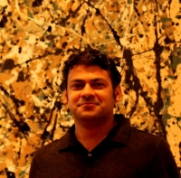
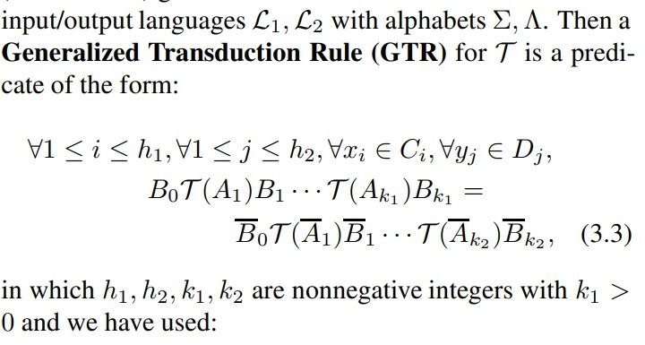
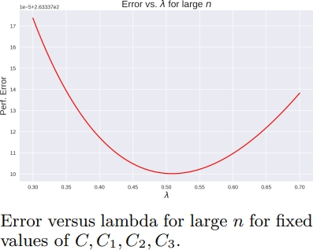
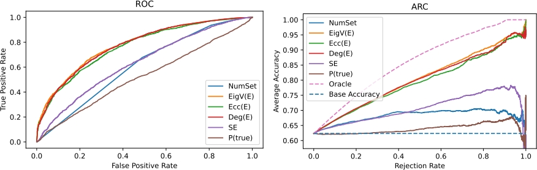
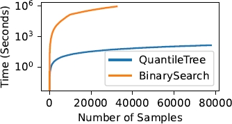

[New page: Updating...]
I am a researcher working in machine learning and computational & applied mathematics.
The purpose of this page is to collate some of my research-related activities and work. I am interested broadly in the theory and practice of machine
learning. My work frequently intersects with mathematical areas such as applied probability, statistical mechanics, combinatorics, harmonic analysis, and representation theory. I often
get inspiration from [and work on] applications of machine learning in computational chemistry/physics, science automation, and healthcare.
For the past few years my research has focused on developing rigorous theoretical and engineering tools for data-efficient machine learning (e.g. via
equivariant and geometric deep learning) and enabling their safe and reliable deployment in real-world applications and decision-making pipelines (e.g. via
conformal prediction and provable uncertainty quantification). A recent area of interest is using tools from statistical physics for analysis of neural
networks. I also maintain an interest in spectral graph theory and extremal combinatorics from a past life. A somewhat verbose description of topics
that I have worked on for extended periods can be found here. Publications and patents can be
found here.
I have extensive experience in both academic and industrial research and engineering, including in the deployment of large-scale machine learning
systems. More information on my training can be found here. In industrial contexts,
I have worked, at various points, in technology research, in (technology/pharmaceuticals and management) consulting, and in semiconductors. I have also been involved with a semiconductors startup
in the past and have also advised multiple startups in the healthcare space. If you'd like a CV, please email me.
Collaborations: If you would like to collaborate on a topic of mutual interest (research or non-research; for non-research interests you might have to poke around),
please email me and we can set up a time. Some questions of current research interest can be found here. I am also keenly interested in teaching and
mentoring students in some of my free time, especially those coming from community colleges and rural areas. Please
see this for subjects of interest, and don't hesitate in contacting me if I might fit the bill.
Contact:
- email: shubhendu@csail.mit.edu
Some Background
I was originally trained in electronics engineering, with a specialization in telecommunication systems. At the same time I also got a diploma in RF antenna and wireless network design. During and immediately after my undergrad, I worked on application specific integrated circuits for signal processing, eventually applying them to machine learning problems, specifically in audio processing and biometrics. Then, I went on to work under Neil T. Heffernan and Gábor N. Sárközy earning a MS in computer science. My primary focus was on intelligent tutoring system, educational analytics, clustering, and ensemble learning methods. Part of my MS thesis work (Sonia Chernova was the reader) proposed clustering procedures based on the Szemerédi Regularity Lemma. Myh MS thesis paper was jointly authored with the Abel laureated Endre Szemerédi†.
Research: Past and Present
[scroll down for publications, theses, patents etc. for more details]
Equivariant Neural Networks:
I have worked on equivariant networks since 2016 intermittently, expending a significant amount of energy on it during my PhD. I initiated the project and focus on equivariant networks at Risi Kondor's lab at the University of Chicago during that period. Some of the background effort to build interest in said project included presenting a whole course on deep learning — first internally and then as a proper graduate course in spring 2017 (the first at the University of Chicago). Broadly, such work involves the design and implementation of neural architectures that either have task pertinent symmetries baked in them using the machinery of group and representation theory aka group-equivariant neural networks, or attempt to learn them from data. Such networks provide a rational and attractive design precept for the principled design of neural networks, while also affording significant data efficiency. I have been involved in work that gives a general prescriptive theory, which elucidates necessary and sufficient conditions for neural networks to be equivariant when inputs transform in a certain manner. The theory provides a tangible path for the practical construction of such networks. This was implemented in a highly optimized manner for the case of spherical inputs. This work has an additional thrust towards a "fully Fourier" methodology that is applicable for general compact groups (not just rotations as in the specific application). Complementary to some of the above theoretical work, with Mircea Petrache, I have also worked on elucidating some very general quantitative bounds that show the generalization benefits of equivariance. These results don't require the underlying set of transformations to be a group, and also include studying the question of model mis-specification i.e. when the model and data symmetries don't match, which necessitates an analysis of the approximation error in addition to the generalization error. Together, they represent the most general results of their type in the literature. I have also been involved in some of the earliest (if not the first) works on equivariant graph networks, which was also applied to the case of molecular property prediction. I continue working on related problems and applications, especially in the physical sciences. For some questions of current interest please see the list below.Conformal Prediction and Uncertainty Quantification:
As machine learning-based decision-making pipelines become increasingly ubiquitous in various critical applications, their safe and trustworthy deployment is becoming exceedingly important. To be trustable, such pipelines should support proactive assessment and continuous monitoring at each stage. To enable proactive assessment, we need provable and easy-to-interpret quantification of uncertainty at every step that can allow human decision makers to intervene when required. Indeed, the theoretically-grounded quantification of predictive uncertainty can serve as an additional layer of security, permitting more honest decision-making. Conformal prediction provides an attactive general framework for provable uncertainty quantification with minimal assumptions on the data distribution and the model. With Zhen Lin and Jimeng Sun, we have worked on the development of conformal methods that are scalable, efficient and can provably work in general settings, all without reducing the accuracy of the base deep learning model. We have developed approaches to construct valid and efficient prediction intervals (PIs) (a band of possible outputs rather a point prediction) for general deep neural networks. Validity means that the PI contains the true output with high probability and efficiency means they have small width. We have also developed conformal methods for the difficult problem of cross-sectional time-series forecasting which can handle validity both along the longitudinal dimension (across points) and the temporal dimension. We have also produced methods for provable full calibration of probabilistic predictions of NNs (not just for the predicted class), which reduces the level of over- or under-confidence typically seen in large neural networks. Much of this work has been directly inspired by real-world scenarios in healthcare such as differential diagnosis, prediction of vital statistics of patients, and also work on automating scientific experiments. Some current problems and themes of interest in this space are listed in the bullet points below.Discriminative Learning of Similarity and Distance:
I worked on similarity learning in the period from 2013 to 2015 under the supervision of Gregory Shakhnarovich (also collaborating with David McAllester and Samory Kpotufe) and it constituted a fair chunk of my 2018 PhD thesis (the rest of which was on group equivariant neural networks). Some of this work was in the old "metric learning" mould while some of it had more of a classical nonparametric and semiparametric statistics flavour. However, the ideas and formulational insights remain relevant in the deep learning era. We presented a formulation for metric learning that made a more direct attempt to optimize for the k-NN accuracy. It considered the choice of k neighbours as a discrete valued latent variable, and cast the metric learning problem as a large margin structured prediction problem. We also worked on extensions of this formulation to metric learning for kNN regression, discriminative learning of Hamming distance and kernel regression. We also considered situations where we operated on a limited computational budget which made optimization over a space of possible metrics infeasible. Nevertheless, a label-aware and well-motivated metric was desirable. We presented an approach based only on gradient estimates with connections to work on sliced-inverse regression and sufficient dimension reduction. Some of this work could be seen as a pre-cursor to some of the more recent work on the empirical Neural Tangent Kernel (NTK). Apart from these more direct contributions, I have often developed pipelines using similarity learning methods in industrial settings from time to time.Machine Learning on Graph-Structured and Combinatorial Data:
I have worked with graph-structured data in different academic research and applied industrial contexts since 2010. Graph-structured data and graph-like structures occur naturally under many guises. Machine learning on such data comes with its own unique challenges compared to the usual real vector-valued data due to its inherently combinatorial nature, requiring a more careful consideration of (sub-)structure and symmetry. During my master's I worked on graph mining from data originating in an intelligent tutoring context, modeled as bipartite graphs. A central contribution of my master's thesis was the use of the Szemerédi Regularity Lemma for graph compression and using it to propose a fast clustering procedure with similar performace as spectral clustering on the orignal graph. As mentioned on the section on equivariance, I was also involved in a project that identified that message passing neural networks (a popular graph neural network formalism) in its basic form lacked an analog for steerability, limiting their expressive power. An equivariant graph neural network was proposed in response. We also used it for the task of molecular property prediction. I have also been involved in a long project on using graph neural networks to understand the glass transition. In industry, I have used graph learning methods for link prediction, early adopter prediction and methods for modeling temporally evolving graphs. More generally, I am interested in methods for operating on combinatorial data -- such as sets, posets, multisets -- beyond graphs, which require a different set of considerations. My current interests in this space include partial differential equations-based formalisms for graph neural networks, hierarchical representations for partially ordered data, and the connections between learning and the expressive power of graph neural networks.Artificial Intelligence in Education:
Between late 2010 to 2012 I did core data mining and graph mining (what would now be called data science) work for research problems originating from a large intelligent tutoring project called ASSISTments, a free public service operated by WPI and the ASSISTments foundation, working with Neil Heffernan and Gábor Sárközy. This personalized tutoring system, used by thousands of students every day, provides immediate feedback for students as they do homework while simultaneously assessing them. It also gives teachers actionable per-student data, and works around the instructional philosophy of Bloom's mastery learning. In this period I worked on modeling student knowledge; a very simple bootstrap aggregation strategy using clustering; prediction of student's future test scores, and improving the classical knowledge tracing method. Some of this work has directly inspired work that has been incorporated into the system. Owing to this experience, I still maintain a residual interest in item response theory, the design of randomized control trials (which I briefly explored in 2018), and the use of machine learning in adaptive learning systems more generally.Industrial Work:
Some of my industrial research work has sought to integrate my work on equivariant modeling and uncertainty quantification in the healthcare domain. This includes drug repurposing, disease phenotyping, identification of rare diseases from massive scale eletronic health records (EHR) or insurance claims data. I also worked on problems in knowledge graph engineering and knowledge representation, dialogue systems, and the use and adaptation of LLMs to very specific, niche, use cases. Some of my interest in UQ comes directly from applications in healthcare. I have led the development of an "unstructured" component in a major LLM-based product, and focused on its deployment. Outside pharmceuticals and LLMs, I have also worked on projects in product sales forecasting for FMCG clients, demand forecasting for a major airline client, and led efforts to automate components of desk research done in a major company. In older interactions, I have worked on problems in robust optimization, portfolio optimization in an operations research context, and Application Specific Integrated Circuits (ASICs) and signal processing in the semiconductors industry. I also advise multiple startups, specifically in robust AI, healthcare, and neuropathology.Machine Learning for the Physical Sciences:
Much of the inspiration for my work in machine learning comes from applications in physics and chemistry. I have been involved in a multi-year and multi-institution collaboration (led by Brian D. Nord and Camille Avestruz) working on the frontiers of the use of deep learning techniques in astrophysics and cosmology. We have produced work on using deep learning to understand observational data about the Cosmic Microwave Background, and to identify Sunyaev-Zel'dovich galaxy clusters. We have also worked on quantifying the uncertainty of predictions in these contexts and their implications for different cosmologies. The long-term goal of this work is to integrate work on equivariant networks, uncertainty quantification, and N-body simulations to theorize about different cosmological parameters and ask basic questions about the underlying physics. I have also worked on the uses of equivariant models in soft matter, chemical physics, molecular synthesis, and molecular property prediction, and this remains a chief application of interest to me. Some of my recent efforts, primarily with Brian D. Nord, have been in designing systems for automating the scientific discovery process in certain contexts – in effect “closing-the-loop” – from data collection to conducting an experiment and generating results. Some of this work leverages techniques from simulation-based inference, equivariant modeling and provable uncertainty quantification. We are currently working towards producing a vision paper on this broader area.Some questions/connections/themes of continual or intermittent recent research interest:
- Neural architectures capturing partial equivariance.
- Equivariant networks for partially ordered data and equivariance to groupoids.
- Formulations and implementations of methods for approximate equivariance.
- Learning of symmetry (rather than assuming it apriori).
- Equivariant models in the dynamical context, with applications in neuroscience and chemistry.
- Mathematical diffraction theory perspectives on equivariant learning.
- Invariance principles for tighter conformal prediction guarantees.
- Conformal prediction for out of distribution data.
- Conformal prediction under distribution drifts.
- Uses of the string method, a numerical method from transition path theory, in machine learning.
- Drive-specific adaptation inspired methods for neural networks optimization.
- Interpretable uncertainty quantification and its uses in automated experimental design.
- Simulation-based inference of hierarchical Bayesian models for applications in physics.
Research reports
A more complete list on google scholar
|

|
Mircea Petrache, Shubhendu Trivedi, Preprint, 2024 arXiv preprint arXiv:2402.01629 |
|

|
Mircea Petrache, Shubhendu Trivedi, Advances in Neural Information Processing Systems 36 (NeurIPS), 2023 arXiv preprint arXiv:2305.17592 |
|

|
Zhen Lin, Shubhendu Trivedi, Jimeng Sun, Preprint, 2023 arXiv preprint arXiv:2305.19187 [Code] |
|

|
Zhen Lin, Shubhendu Trivedi, Cao Xiao, Jimeng Sun, International Conference on Machine Learning (ICML), 2023 arXiv preprint arXiv:2302.00839 [Code] |

|
Zhen Lin, Shubhendu Trivedi, Jimeng Sun, International Conference on Learning Representations (ICLR), 2023 arXiv preprint arXiv:2202.07679 [Code] |

|
Zhen Lin, Shubhendu Trivedi, Jimeng Sun, Advances in Neural Information Processing Systems 35 (NeurIPS), 2022 arXiv preprint arXiv:2205.09940 [Code] |

|
Zhen Lin, Shubhendu Trivedi, Jimeng Sun, Transactions on Machine Learning Research (TMLR), 2022 arXiv preprint arXiv:2205.12940 [Code] |

|
Matthew Farrell, Blake Bordelon, Shubhendu Trivedi, Cengiz Pehlevan, International Conference on Learning Representations (ICLR), 2022 arXiv preprint arXiv:2110.07472 [Code] Oral presentation at NeuReps 2022 (link). |

|
Zhen Lin, Nicholas D. Huang, Camille Avestruz, W. L. Kimmy Wu, Shubhendu Trivedi, João Caldeira, Brian D. Nord, Monthly Notices of the Royal Astronomical Society (MNRAS) 507 (3), 2021 arXiv preprint arXiv:2102.13123 [Code] |

|
Zhen Lin, Shubhendu Trivedi, Jimeng Sun, Advances in Neural Information Processing Systems 34 (NeurIPS), 2021 arXiv preprint arXiv:2106.00225 [Code] |

|
Suhas Lohit, Shubhendu Trivedi, Technical Report., 2020 arXiv preprint arXiv:2012.04474 |

|
Shubhendu Trivedi, Technical Report., 2020 arXiv preprint arXiv:2006.03550 |

|
Kirk Swanson, Shubhendu Trivedi, Joshua Lequieu, Kyle Swanson, Risi Kondor, Soft Matter, The Royal Society of Chemistry, 2020 arXiv preprint arXiv:1909.04648 [Code] |

|
J. Amundson et al. , White Paper for NSF, 2019 arXiv preprint arXiv:1911.05796 |

|
Pramod Kaushik Mudrakarta, Shubhendu Trivedi, Risi Kondor, Technical Report., 2019 arXiv preprint arXiv:1910.05132 |

|
João Caldeira, W. L. Kimmy Wu, Brian D. Nord, Camille Avestruz, Shubhendu Trivedi, Kyle T. Story, Astronomy and Computing 28, 100307 , 2019 arXiv preprint arXiv:1810.01483 [Code] |

|
Hy Truong Son, Shubhendu Trivedi, Horace Pan, Brandon M. Anderson, Risi Kondor, 15th International Workshop on Learning and Mining with Graphs, 2019 |

|
Shubhendu Trivedi, PhD Thesis , 2018 arXiv preprint arXiv:1808.10078 |

|
Hy Truong Son, Shubhendu Trivedi, Horace Pan, Brandon M. Anderson, Risi Kondor, The Journal of Chemical Physics (JCP) 148 (24), 241745 , 2018 Editor's Pick in JCP's Special Issue on Data-Enabled Theoretical Chemistry |

|
Risi Kondor†, Zhen Lin†, Shubhendu Trivedi†, Advances in Neural Information Processing Systems 31 (NeurIPS) , 2018 arXiv preprint arXiv:1806.09231 [Code] † denotes alphabetical author ordering |

|
Risi Kondor, Shubhendu Trivedi†, International Conference on Machine Learning (ICML) , 2018 arXiv preprint arXiv:1802.03690 |

|
Risi Kondor†, Hy Truong Son†, Horace Pan†, Brandon M. Anderson†, Shubhendu Trivedi†, International Conference on Learning Representaions (ICLR) - WS , 2018 arXiv preprint arXiv:1801.02144 [Code] † Author ordering is entirely arbitrary |

|
Shubhendu Trivedi, Zachary A. Pardos, Neil T. Heffernan, Technical Report., 2015 arXiv preprint arXiv:1509.06163 |

|
Shubhendu Trivedi, David McAllester, Gregory Shakhnarovich, Advances in Neural Information Processing Systems 27 (NeurIPS), 2014 |

|
Shubhendu Trivedi, Jialei Wang, Samory Kpotufe, Gregory Shakhnarovich, Uncertainty in Artificial Intelligence (UAI), 2014 |

|
Fei Song, Shubhendu Trivedi, Yutao Wang, Gábor N. Sárközy, Neil T. Heffernan, AAAI FLAIRS, 2013 |

|
Shubhendu Trivedi, M.S. Thesis , 2012 WPI ETD-043012-104639 |

|
Gábor N. Sárközy†, Fei Song†, Endre Szemerédi†, Shubhendu Trivedi†, Technical Report WPI-CS-TR-12-05, 2012 arXiv preprint arXiv:1209.6540 † denotes alphabetical author ordering |

|
Zachary A. Pardos, Shubhendu Trivedi, Neil T. Heffernan, Gábor N. Sárközy, Intelligent Tutoring Systems (ITS), 2012 |

|
Shubhendu Trivedi, Zachary A. Pardos, Gábor N. Sárközy, Neil T. Heffernan, Educational Data Mining (EDM), 2012 International Educational Data Mining Society |

|
Zachary A. Pardos, Qingyang Wang, Shubhendu Trivedi, Educational Data Mining (EDM), 2012 International Educational Data Mining Society |

|
Shubhendu Trivedi, Zachary A. Pardos, Neil T. Heffernan, Educational Data Mining (EDM), 2011 International Educational Data Mining Society |

|
Shubhendu Trivedi, Zachary A. Pardos, Neil T. Heffernan, Artificial Intelligence in Education (AIED), 2011 |
Patents
R. Kondor, S. Trivedi and Z. Lin.
International Patent PCT/US2019/038236; US Patent App. 17/253,840
S. Chilukuri, S. Trivedi, C. Xue, T. Joyce, S. Rane, A. Rathi, R. Evans.
US Patent Pending
Theses & etc.
Shubhendu Trivedi.
MS Thesis, 2012.
Shubhendu Trivedi.
Ph.D. Thesis, 2018.
Assorted notes and presentations [to be updated]::
Teaching
Graduate and undergraduate courses as instructor:
- Deep Learning (University of Chicago, Computer Science. Course code: CMSC 35246, Textbook: Bengio, Goodfellow, Courville;
Course website)
The course is a bit dated at this point, but still might be useful, please peruse the site for readings. Since I was a graduate student when this course was taught, it had a faculty mentor (Risi Kondor). This course basically used some material I had prepared for presenting in Risi Kondor's lab the previous year, while starting up work and building interest there in deep learning and equivariant learning.
Since I no longer have control over the course website linked above, I am unable to add some missing slides, which were at the time posted internally. Here are the lecture slides posted again (these are with "pauses", if that annoys you, find the "flat" versions on the course website):
|Lecture 1|Lecture 2| Lecture 3|Lecture 4| Lecture 5|Lecture 6| Lecture 7|Lecture 8| Lecture 9|Lecture 10| Lecture 11|Lecture 12| Lecture 13|Lecture 14| Lecture 15|Lecture 16| Lecture 17|Lecture 18.| - Introduction to Digital Image Processing (University of Pune, Electrical Engineering; Textbook: Gonzalez and Woods; Jointly taught with prof Kalyani R. Joshi)
- Image and Signal Processing Lab with MATLAB (University of Pune, Electrical Engineering)
- Introduction to Bioinformatics (University of Pune, Computer Science)
In most of the courses listed below I usually gave a couple of lectures (other than the usual TA duties). In the WPI courses, I taught a weekly recitation, which involved repeating the course material at another time. I have won awards for three of these courses.
- WPI CS 534 Graduate Artificial Intelligence (Instructor: Neil T. Heffernan, Textbook: Russell and Norvig)
- TTIC 31020 Graduate Introduction to Statistical Machine Learning (Instructor: Gregory Shakhnarovich)
- CS 4120 Analysis of Algorithms (Instructor: Gábor N. Sárközy, Textbook: CLRS/Kleinberg-Tardos)
- CS 2223 Introduction to Algorithms wih Lua (Instructor: Joshua D. Guttman, Textbook: CLRS)
- CS 3133 Automata Theory (Instructor: Gábor N. Sárközy, Textbook: Sudkamp)
- CS 4341 Introduction to Artificial Intelligence (Instructor: Neil T. Heffernan, Textbook: Russell and Norvig)
- MA 2201 Discrete Mathematics (Instructor: Gábor N. Sárközy, Textbook: Kenneth Rosen)
- CS 2223 Introduction to Algorithms wih Lua (Instructor: Joshua D. Guttman, Textbook: CLRS)
- CS 3133 Automata Theory (Instructor: Gábor N. Sárközy, Textbook: Sudkamp, Dexter Kozen)
- CS 2011 Introduction to Machine Organization and Assembly Language (Instructor: Hugh C. Lauer, Textbook: Bryant and Halloran)
- STAT 27725/CMSC 25400 Machine Learning (Instructor: Imre Risi Kondor). Slides from some lectures from this course: | 1 | 2 | 3 | 4 |
I usually interact with highschool and middle school students through non-profits or volunteer organizations (some examples below). However, I am open to mentoring highschool students who might be interested in a career in science or mathematics. I will usually have the bandwidth for one student (or a group with the same interests) at a time, and like to work with them for an extended period of time. Online is fine (note: this is not a work solicitation, I do not charge, but I should be convinced that I can make a difference to the student(s), and that they can not afford the same arrangement elsewhere).
- I taught middle school students in municipal schools and tribal areas around Pune for three years as part of a Power Electronics Society program when in undergrad.
- Intro. to Artificial Intelligence (organized by MSSY, a 501(c)(3) nonprofit). Students were from highschool.
- Intro. to Machine Learning (organized by MSSY, a 501(c)(3) nonprofit). Middle school to highschool.
I haven't taught at community colleges in an official capacity (please get in touch if you want me to deliver lectures!). But I have worked with about 25 community college students over the years. I enjoy working closely with advanced students and have covered courses in mathematics, basic electronics and electrical engineering, computer science (including programming) etc. I might have the bandwidth for one student (or a group with the same interests) at a time. I prefer meeting in person (usually Saturdays). If you are a community college student and located geographically close to me, and find it hard to afford tutoring, are interested in a career in data science/machine learning/mathematics but feel like you need some mentorship, please feel free to get in touch with me. As above, the only thing I need is that I should be convinced I can make a real difference.
Service and other activities
Refereeing activities: I referee roughly 50 papers a year from various venues in machine learning, computational physics, computational and applied mathematics, experimental mathematics, information theory and applied statistics. These venues include the following:Journals:
- Nature Astronomy
- Journal of Machine Learning Research
- Transactions on Machine Learning Research
- IEEE Transactions on Pattern Analysis and Machine Intelligence
- IEEE Transactions on Information Theory
- IEEE Transactions on Medical Imaging
- IEEE Transactions on Neural Networks and Learning Systems
- Annals of Mathematics and Artificial Intelligence
- F1000Research
- Nature Communications
- International Conference on Machine Learning (ICML)
- Neural Information Processing Systems (NeurIPS)
- International Conference on Learning Representations (ICLR)
- IEEE Conference on Computer Vision and Pattern Recognition (CVPR)
- IEEE International Conference on Computer Vision (ICCV)
- IEEE European Conference on Computer Vision (ECCV)
- Winter Area Conference on Computer Vision (WACV)
- ACM SIGGRAPH
- NeurIPS Workshop on Machine Learning and the Physical Sciences
Apart from being part of the technical prog. committee of the above, I was recently also on the committee for:
- Symmetry and Geometry in Neural Representations (NeurReps), Workshop at NeurIPS 2022.
- Project mentor: London Geometry and Machine Learning Summer School 2022
Project: Equivariant Poset Representations - Project mentor: London Geometry and Machine Learning Summer School 2021
Project: Efficient fully Fourier spherical convolutional networks - Long term attendee: Computer vision semester program at ICERM, Brown University
- Long term attendee: Nonlinear Algebra semester program at ICERM, Brown University
- Organizer for the algebraic computer vision research group at Brown University (applied algebraic geometry in vision)
Invited Talks
[Last updated: December 2023]
- Keynote Speaker: Neural Information Processing Systems 2023, New Orleans LA, Workshop on Machine Learning in the Physical Sciences (Dec. 2023)
- Boston Symmetry Day, MIT (Apr. 2023)
- Plenary Speaker: CenIA Workshop on Theoretical and Mathematical Aspects of Deep Learning, Santiago de Chile (Aug. 2022)
- Keynote Speaker: International Conference on Machine Learning 2022, Baltimore MD, Workshop on Topology, Geometry, and Algebra in Machine Learning (Jul. 2022)
- Session Speaker: SIAM Conference on Uncertainty Quantification (UQ22), Mini-symposium on Robust and Efficient Probabilistic Deep Learning for Scientific data and Beyond, Atlanta, GA (Apr. 2022).
- Vrije Universiteit Amsterdam, Colloquium (June 2020)
- MIT ML (Nov. 2019)
- University of Massachusetts Amherst, Data Science Tea (Sept. 2019)
- Worcester Polytechnic Institute, CS Colloquium (Sept. 2018)
- Fermi National Accelerator Lab, Colloquium (Nov. 2017)